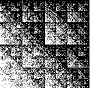
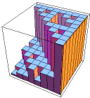
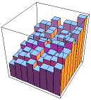
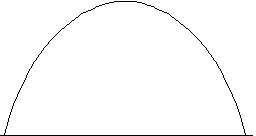
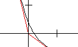
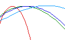
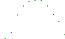

| A. As a first mathematical example, we see that by adjusting the probabilities,
we can make different parts of the fractal fill in at different rates. |
| Here is an example. The IFS of this
example generates the unit square. |
| However, the square fills up in a non-uniform way, revealing many fractals. |
|
 |
| Here is a review exercise on addresses. | |
| B. Continuing with the example of A., here
are histograms representing the probabilities of the first four generations. |
| Note the highest-probability region has a familiar shape. |
| This is easy to understand. |
| The lower left, lower right, and upper right transformations all have the same
probability, and those three transformations together generate a Sierpinski gasket. |
|
 |
| C. Here is another example,
Example B, with p1 = 0.2,
p2 = p3 = 0.25, and p4 = 0.3. |
| Now structures more complicated than gaskets will appear. |
|
 |
| Here is a practice exercise on probabilities, using
the probabilities of Example B. | |
| Here is a practice exercise on coarse Holder exponents, using
the probabilities of Example B. | |
| D. In the length->0 limit, the coarse Holder exponent becomes a
local Holder exponent. |
| The place-dependence of local Holder exponent motivates the name multifractal. |
| Here we investigate the distribution of local Holder exponents
for Example B. |
| The resulting curve is called the f(alpha) curve. |
|
 |
| Here are some review exercises for the Moran equation. | |
| Here are some practice exercises on moments. | |
| E. Here is the general method for generating
multifractals with IFS. |
| We modify the Moran equation, weighting each term with the probability of the transformation. |
| This gives the tau(q) curve, from which the f(alpha) curve can be calculated. |
|
 |
| Here are some practice exercises for the tau(q) curve. | |
| Here are some practice exercises for the f(alpha) curve. | |
| F. By changing the probabilities of the transformations, we alter the rate at which
different parts of the shape fills in, and consequently change the f(alpha) curve. |
| Here we illustrate this dependence by several examples. |
|
 |
| Here we dsicuss the method of moments for plotting f(alpha) curves. This is most easily understood
in the context of examples: time series moments,
planar data moments, and the special case of
IFS moments. | |
| G. Here are some examples of f(alpha) curves derived from
financial data using the method of moments. |
|
 |
{kind=link}
{kind=link}